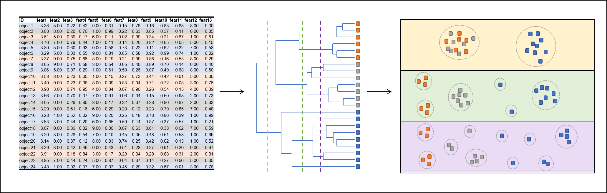
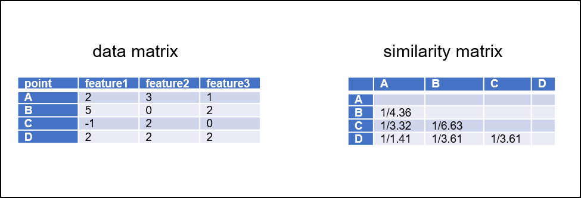
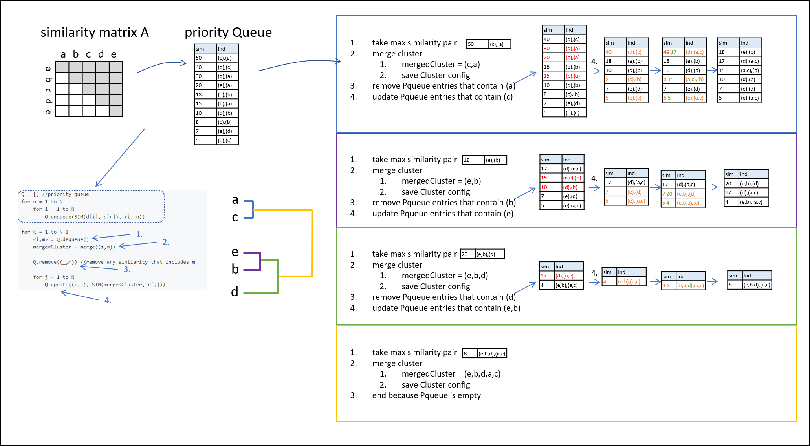

Interested? Contact muehlhaus@bio.uni-kl.de or venn@bio.uni-kl.de

Fig 1: Generating a hierarchical tree structure from a complex data set. Vertical thresholds (yellow, green, violet) generate different cluster numbers.
Clustering methods can be used to group elements of a huge data set based on their similarity. Elements sharing similar properties cluster together and can be
reported as coherent group. These properties could be e.g. (a) similar gene expression kinetics in time series, (b) similar physicochemical properties, (c) genetic
similarity measures for phylogenetic trees, etc.
Many clustering algorithms require a predefined cluster number, that has to be provided by the experimenter. The most common approach is k-means clustering,
where k stands for the user defined cluster number. This kind of user interaction can lead to results, that are not objective, but highly influenced by the
view and expectation of the experimenter.
Hierarchical clustering (hClust) does not require such cluster number definition. Instead, hClust reports all possible cluster numbers
(One big cluster with all elements to n clusters where every element is a singleton in its own cluster) in a tree structure (Fig 1).
A hClust tree has a single cluster (node) on its root and recursively splits up into clusters of elements that are more similar to each other than
to elements of other clusters. For generating multiple cluster results with different number of clusters, the clustering has to performed only once.
Subsequently the tree can be cut at any vertical line which will result in a defined number of clusters.
There are two types of hClust:
There are several distance metrics, that can be used as distance function. The commonly used one probably is Euclidean distance. By inverting the distance, you end up with a similarity. High similarities indicate low distances, and vice versa. By calculating the similarities for every element pair, a similarity matrix can be generated.

Fig 2: Data matrix (left) with measurement types as columns and (biological) entities as rows. The data matrix can be converted into a similarity matrix, that contain the inverse of distances.

Fig 3: Workflow as proposed in pseudo code in Reference#2.
- Blog post introducing the method, its applications, and limitations.
- Implement an efficient agglomerative hierarchical clustering in FSharp.Stats.
-
Inform yourself about
- queues and priority queues (roughly)
- similarity measurements such as Euclidean distance, Manhattan distance, the advantage to use the squared Euclidean distance
- single linkage, complete linkage, and centroid based linkage types
-
Down below you can see the pseudo code (not F#!) the efficient agglomerative hierarchical clustering (HAC) is based on:
// Generating priority queue
Q = [] //priority queue
for n = 1 to N
for i = 1 to N
Q.enqueue(SIM(d[i], d[n]), (i, n))
// iterative agglomerative clustering
for k = 1 to N-1
<i,m> = Q.dequeue()
mergedCluster = merge((i,m))
Q.remove((_,m)) //remove any similarity that includes m
for j = 1 to N
Q.update((i,j), SIM(mergedCluster, d[j]))
create a F# script (.fsx), load and open FSharp.Stats, FSharpAux and FSharpx.Collections
-
import test data
- An implementation of an priority queue is given below.
-
Please read this project description carefully before starting the implementation steps. A modification given in Reference#2.
that boosts the efficiancy is not covered by the steps below. See the "7: Further coding considerations" in the end!
#r "nuget: FSharpAux, 1.1.0"
#r "nuget: FSharp.Stats, 0.4.3"
#r "nuget: FSharpx.Collections, 2.1.3"
#r "nuget: Plotly.NET, 2.0.0-preview.16"
open FSharp.Stats
open FSharpAux
open FSharpx.Collections
open Plotly.NET
let lables,data =
let fromFileWithSep (separator:char) (filePath) =
// The function is implemented using a sequence expression
seq { let sr = System.IO.File.OpenText(filePath)
while not sr.EndOfStream do
let line = sr.ReadLine()
let words = line.Split separator//[|',';' ';'\t'|]
yield words }
fromFileWithSep ',' (__SOURCE_DIRECTORY__ + "../content/irisData.csv")
|> Seq.skip 1
|> Seq.map (fun arr -> arr.[4], [| float arr.[0]; float arr.[1]; float arr.[2]; float arr.[3]; |])
|> Seq.toArray
|> FSharp.Stats.Array.shuffleFisherYates
|> Array.mapi (fun i (lable,data) -> sprintf "%s_%i" lable i, data)
|> Array.unzip
type PriorityQueue<'T when 'T : comparison>(values : 'T [], comparisonF : 'T -> float) =
let sort = Array.sortByDescending comparisonF
let mutable data = sort values
new (comparisonF) = PriorityQueue(Array.empty,comparisonF)
interface System.Collections.IEnumerable with
member this.GetEnumerator() = data.GetEnumerator()
member this.UpdateElement (t:'T) (newt:'T) =
let updated =
data
|> Array.map (fun x -> if x = t then newt else x)
|> sort
data <- updated
member this.Elements = data
member this.RemoveElement (t:'T) =
let filtered =
Array.filter (fun x -> x <> t) data
data <- filtered
member this.GetHead :'T =
Array.head data
member this.Dequeue() =
let head,tail = Array.head data, Array.tail data
data <- tail
head, this
member this.Insert (t:'T) =
let newd = Array.append data [|t|] |> sort
data <- newd
member this.UpdateBy (updateElementFunction: 'T -> 'T) =
let newd =
Array.map updateElementFunction data
|> sort
data <- newd
member this.RemoveElementsBy (predicate: 'T -> bool) =
let newd =
Array.filter predicate data
data <- newd
/// Type to store similarities
type Neighbour = {
/// inverse of distance
Similarity: float
/// list of source cluster indices
Source : int list
/// list of target cluster indices
Target : int list
}
with static
member Create d s t = { Similarity = d; Source = s; Target = t}
//Example queue
let neighbours =
[|
Neighbour.Create 1. [1] [2]
Neighbour.Create 2. [0] [6]
Neighbour.Create 5. [3] [5]
Neighbour.Create 2. [4;7;10] [8;9]
Neighbour.Create 7. [1] [2]
|]
////// usage of PriorityQueue
let myPQueue = PriorityQueue(neighbours,fun x -> x.Similarity)
myPQueue.GetHead // reports queues
myPQueue.RemoveElement (Neighbour.Create 5. [3] [5]) // removes element from queue
myPQueue.UpdateElement (Neighbour.Create 2. [0] [6]) (Neighbour.Create 200. [0] [6]) // update element in queue
myPQueue.RemoveElementsBy (fun x -> not (List.contains 3 x.Source)) // update element in queue
myPQueue.UpdateBy (fun x -> if x.Similarity > 2. then Neighbour.Create 100. x.Source x.Target else x)// update elements in queue by given function
////// usage of IntervalHeap
#r "nuget: C5, 2.5.3"
open C5
let myHeap : IntervalHeap<Neighbour> = IntervalHeap(MemoryType.Normal)
myHeap.AddAll(neighbours) // adds array of neighbours
let max = myHeap.FindMax() // finds max value entry
myHeap.DeleteMax() // deletes max value entry
myHeap.Filter (fun x -> x.Similarity = 5.) // filters entries based on predicate function
- Some example applications of the PriorityQueue type are shown above.
- Generate a priority queue that is descending regarding the similarity.
-
Create a clustering list, that contains information of the current clustering state. This could be an int list [] where each of the lists contains indices of clustered data points. Since in the beginning all data points are in its own cluster the clustering list could look as follows:
-
When cluster 1 and 2 merge, the clustering list may look like this:
-
Clustering list now contains all possible cluster configurations. Convert the clustering list into
a binary tree structure such as
ML.Unsupervised.HierarchicalClustering.Cluster<'a>
- create a function, that contains all necessary helper functions in its body and takes the following parameters (suggestion):
data |
seq<'a>
|
data |
distFu |
'a->'a->float
|
distance Function from FSharp.Stats.ML.DistanceMetrics |
linkageType |
Linker.LancWilliamsLinker or self defined
|
linkage type that is used during clustering |
|
|
|
output |
ML.Unsupervised.HierarchicalClustering.Cluster<'a> or cluster configuration list
|
|
- apply hClust to a dataset of your choice
- optional: Test your results against implementations in R/Python or in the best case against the datasets proposed in the original publication.
- What is solved by the usage of hClust?
- classical application examples
- limitations/drawbacks of hClust
- short description of the algorithm (maybe with flowchart visualization)
val n : int
Multiple items
namespace FSharp
--------------------
namespace Microsoft.FSharp
namespace FSharp.Stats
namespace FSharpAux
namespace FSharpx
namespace FSharpx.Collections
namespace Plotly
namespace Plotly.NET
val lables : string []
val data : float [] []
val fromFileWithSep : (char -> string -> seq<string []>)
val separator : char
Multiple items
val char : value:'T -> char (requires member op_Explicit)
<summary>Converts the argument to character. Numeric inputs are converted according to the UTF-16
encoding for characters. String inputs must be exactly one character long. For other
input types the operation requires an appropriate static conversion method on the input type.</summary>
<param name="value">The input value.</param>
<returns>The converted char.</returns>
--------------------
[<Struct>]
type char = System.Char
<summary>An abbreviation for the CLI type <see cref="T:System.Char" />.</summary>
<category>Basic Types</category>
val filePath : string
Multiple items
val seq : sequence:seq<'T> -> seq<'T>
<summary>Builds a sequence using sequence expression syntax</summary>
<param name="sequence">The input sequence.</param>
<returns>The result sequence.</returns>
--------------------
type seq<'T> = System.Collections.Generic.IEnumerable<'T>
<summary>An abbreviation for the CLI type <see cref="T:System.Collections.Generic.IEnumerable`1" /></summary>
<remarks>
See the <see cref="T:Microsoft.FSharp.Collections.SeqModule" /> module for further operations related to sequences.
See also <a href="https://docs.microsoft.com/dotnet/fsharp/language-reference/sequences">F# Language Guide - Sequences</a>.
</remarks>
val sr : System.IO.StreamReader
namespace System
namespace System.IO
type File =
static member AppendAllLines : path: string * contents: IEnumerable<string> -> unit + 1 overload
static member AppendAllLinesAsync : path: string * contents: IEnumerable<string> * encoding: Encoding *?cancellationToken: CancellationToken -> Task + 1 overload
static member AppendAllText : path: string * contents: string -> unit + 1 overload
static member AppendAllTextAsync : path: string * contents: string * encoding: Encoding *?cancellationToken: CancellationToken -> Task + 1 overload
static member AppendText : path: string -> StreamWriter
static member Copy : sourceFileName: string * destFileName: string -> unit + 1 overload
static member Create : path: string -> FileStream + 2 overloads
static member CreateText : path: string -> StreamWriter
static member Decrypt : path: string -> unit
static member Delete : path: string -> unit
...
<summary>Provides static methods for the creation, copying, deletion, moving, and opening of a single file, and aids in the creation of <see cref="T:System.IO.FileStream" /> objects.</summary>
System.IO.File.OpenText(path: string) : System.IO.StreamReader
val not : value:bool -> bool
<summary>Negate a logical value. Not True equals False and not False equals True</summary>
<param name="value">The value to negate.</param>
<returns>The result of the negation.</returns>
property System.IO.StreamReader.EndOfStream: bool with get
<summary>Gets a value that indicates whether the current stream position is at the end of the stream.</summary>
<exception cref="T:System.ObjectDisposedException">The underlying stream has been disposed.</exception>
<returns><see langword="true" /> if the current stream position is at the end of the stream; otherwise <see langword="false" />.</returns>
val line : string
System.IO.StreamReader.ReadLine() : string
val words : string []
System.String.Split([<System.ParamArray>] separator: char []) : string []
System.String.Split(separator: string [], options: System.StringSplitOptions) : string []
System.String.Split(separator: string,?options: System.StringSplitOptions) : string []
System.String.Split(separator: char [], options: System.StringSplitOptions) : string []
System.String.Split(separator: char [], count: int) : string []
System.String.Split(separator: char,?options: System.StringSplitOptions) : string []
System.String.Split(separator: string [], count: int, options: System.StringSplitOptions) : string []
System.String.Split(separator: string, count: int,?options: System.StringSplitOptions) : string []
System.String.Split(separator: char [], count: int, options: System.StringSplitOptions) : string []
System.String.Split(separator: char, count: int,?options: System.StringSplitOptions) : string []
Multiple items
module Seq
from Plotly.NET
--------------------
module Seq
from FSharpx.Collections
<summary>
Extensions for F#'s Seq module.
</summary>
--------------------
module Seq
from FSharpAux
--------------------
module Seq
from FSharp.Stats
<summary>
Module to compute common statistical measure
</summary>
--------------------
module Seq
from Microsoft.FSharp.Collections
<summary>Contains operations for working with values of type <see cref="T:Microsoft.FSharp.Collections.seq`1" />.</summary>
val skip : count:int -> source:seq<'T> -> seq<'T>
<summary>Returns a sequence that skips N elements of the underlying sequence and then yields the
remaining elements of the sequence.</summary>
<param name="count">The number of items to skip.</param>
<param name="source">The input sequence.</param>
<returns>The result sequence.</returns>
<exception cref="T:System.ArgumentNullException">Thrown when the input sequence is null.</exception>
<exception cref="T:System.InvalidOperationException">Thrown when count exceeds the number of elements
in the sequence.</exception>
val map : mapping:('T -> 'U) -> source:seq<'T> -> seq<'U>
<summary>Builds a new collection whose elements are the results of applying the given function
to each of the elements of the collection. The given function will be applied
as elements are demanded using the <c>MoveNext</c> method on enumerators retrieved from the
object.</summary>
<remarks>The returned sequence may be passed between threads safely. However,
individual IEnumerator values generated from the returned sequence should not be accessed concurrently.</remarks>
<param name="mapping">A function to transform items from the input sequence.</param>
<param name="source">The input sequence.</param>
<returns>The result sequence.</returns>
<exception cref="T:System.ArgumentNullException">Thrown when the input sequence is null.</exception>
val arr : string []
Multiple items
val float : value:'T -> float (requires member op_Explicit)
<summary>Converts the argument to 64-bit float. This is a direct conversion for all
primitive numeric types. For strings, the input is converted using <c>Double.Parse()</c>
with InvariantCulture settings. Otherwise the operation requires an appropriate
static conversion method on the input type.</summary>
<param name="value">The input value.</param>
<returns>The converted float</returns>
--------------------
[<Struct>]
type float = System.Double
<summary>An abbreviation for the CLI type <see cref="T:System.Double" />.</summary>
<category>Basic Types</category>
--------------------
type float<'Measure> =
float
<summary>The type of double-precision floating point numbers, annotated with a unit of measure.
The unit of measure is erased in compiled code and when values of this type
are analyzed using reflection. The type is representationally equivalent to
<see cref="T:System.Double" />.</summary>
<category index="6">Basic Types with Units of Measure</category>
val toArray : source:seq<'T> -> 'T []
<summary>Builds an array from the given collection.</summary>
<param name="source">The input sequence.</param>
<returns>The result array.</returns>
<exception cref="T:System.ArgumentNullException">Thrown when the input sequence is null.</exception>
module Array
from FSharp.Stats
<summary>
Module to compute common statistical measure on array
</summary>
val shuffleFisherYates : arr:'b [] -> 'b []
<summary>
Shuffels the input array (method: Fisher-Yates)
</summary>
Multiple items
module Array
from FSharpx.Collections
<summary>
Extensions for F#'s Array module.
</summary>
--------------------
module Array
from FSharpAux
--------------------
module Array
from FSharp.Stats
<summary>
Module to compute common statistical measure on array
</summary>
--------------------
module Array
from Microsoft.FSharp.Collections
<summary>Contains operations for working with arrays.</summary>
<remarks>
See also <a href="https://docs.microsoft.com/dotnet/fsharp/language-reference/arrays">F# Language Guide - Arrays</a>.
</remarks>
val mapi : mapping:(int -> 'T -> 'U) -> array:'T [] -> 'U []
<summary>Builds a new array whose elements are the results of applying the given function
to each of the elements of the array. The integer index passed to the
function indicates the index of element being transformed.</summary>
<param name="mapping">The function to transform elements and their indices.</param>
<param name="array">The input array.</param>
<returns>The array of transformed elements.</returns>
<exception cref="T:System.ArgumentNullException">Thrown when the input array is null.</exception>
val i : int
val lable : string
val data : float []
val sprintf : format:Printf.StringFormat<'T> -> 'T
<summary>Print to a string using the given format.</summary>
<param name="format">The formatter.</param>
<returns>The formatted result.</returns>
val unzip : array:('T1 * 'T2) [] -> 'T1 [] * 'T2 []
<summary>Splits an array of pairs into two arrays.</summary>
<param name="array">The input array.</param>
<returns>The two arrays.</returns>
<exception cref="T:System.ArgumentNullException">Thrown when the input array is null.</exception>
Multiple items
module PriorityQueue
from FSharpx.Collections
--------------------
type PriorityQueue<'T (requires comparison)> =
interface IEnumerable
new : comparisonF:('T -> float) -> PriorityQueue<'T> + 1 overload
member Dequeue : unit -> 'T * PriorityQueue<'T>
member Insert : t:'T -> unit
member RemoveElement : t:'T -> unit
member RemoveElementsBy : predicate:('T -> bool) -> unit
member UpdateBy : updateElementFunction:('T -> 'T) -> unit
member UpdateElement : t:'T -> newt:'T -> unit
member Elements : 'T []
member GetHead : 'T
--------------------
new : comparisonF:('T -> float) -> PriorityQueue<'T>
new : values:'T [] * comparisonF:('T -> float) -> PriorityQueue<'T>
val values : 'T [] (requires comparison)
val comparisonF : ('T -> float) (requires comparison)
val sort : ('T [] -> 'T []) (requires comparison)
val sortByDescending : projection:('T -> 'Key) -> array:'T [] -> 'T [] (requires comparison)
<summary>Sorts the elements of an array, in descending order, using the given projection for the keys and returning a new array.
Elements are compared using <see cref="M:Microsoft.FSharp.Core.Operators.compare" />.</summary>
<remarks>This is not a stable sort, i.e. the original order of equal elements is not necessarily preserved.
For a stable sort, consider using <see cref="M:Microsoft.FSharp.Collections.SeqModule.Sort" />.</remarks>
<param name="projection">The function to transform array elements into the type that is compared.</param>
<param name="array">The input array.</param>
<returns>The sorted array.</returns>
val mutable data : 'T [] (requires comparison)
val empty<'T> : 'T []
<summary>Returns an empty array of the given type.</summary>
<returns>The empty array.</returns>
namespace System.Collections
type IEnumerable =
member GetEnumerator : unit -> IEnumerator
<summary>Exposes an enumerator, which supports a simple iteration over a non-generic collection.</summary>
val this : PriorityQueue<'T> (requires comparison)
System.Array.GetEnumerator() : System.Collections.IEnumerator
val t : 'T (requires comparison)
val newt : 'T (requires comparison)
val updated : 'T [] (requires comparison)
val map : mapping:('T -> 'U) -> array:'T [] -> 'U []
<summary>Builds a new array whose elements are the results of applying the given function
to each of the elements of the array.</summary>
<param name="mapping">The function to transform elements of the array.</param>
<param name="array">The input array.</param>
<returns>The array of transformed elements.</returns>
<exception cref="T:System.ArgumentNullException">Thrown when the input array is null.</exception>
val x : 'T (requires comparison)
val filtered : 'T [] (requires comparison)
val filter : predicate:('T -> bool) -> array:'T [] -> 'T []
<summary>Returns a new collection containing only the elements of the collection
for which the given predicate returns "true".</summary>
<param name="predicate">The function to test the input elements.</param>
<param name="array">The input array.</param>
<returns>An array containing the elements for which the given predicate returns true.</returns>
<exception cref="T:System.ArgumentNullException">Thrown when the input array is null.</exception>
val head : array:'T [] -> 'T
<summary>Returns the first element of the array.</summary>
<param name="array">The input array.</param>
<returns>The first element of the array.</returns>
<exception cref="T:System.ArgumentNullException">Thrown when the input array is null.</exception>
<exception cref="T:System.ArgumentException">Thrown when the input array is empty.</exception>
val head : 'T (requires comparison)
val tail : 'T [] (requires comparison)
val tail : array:'T [] -> 'T []
<summary>Returns a new array containing the elements of the original except the first element.</summary>
<param name="array">The input array.</param>
<exception cref="T:System.ArgumentException">Thrown when the array is empty.</exception>
<exception cref="T:System.ArgumentNullException">Thrown when the input array is null.</exception>
<returns>A new array containing the elements of the original except the first element.</returns>
val newd : 'T [] (requires comparison)
val append : array1:'T [] -> array2:'T [] -> 'T []
<summary>Builds a new array that contains the elements of the first array followed by the elements of the second array.</summary>
<param name="array1">The first input array.</param>
<param name="array2">The second input array.</param>
<returns>The resulting array.</returns>
<exception cref="T:System.ArgumentNullException">Thrown when either of the input arrays is null.</exception>
val updateElementFunction : ('T -> 'T) (requires comparison)
val predicate : ('T -> bool) (requires comparison)
[<Struct>]
type bool = System.Boolean
<summary>An abbreviation for the CLI type <see cref="T:System.Boolean" />.</summary>
<category>Basic Types</category>
Neighbour.Similarity: float
inverse of distance
Neighbour.Source: int list
list of source cluster indices
Multiple items
val int : value:'T -> int (requires member op_Explicit)
<summary>Converts the argument to signed 32-bit integer. This is a direct conversion for all
primitive numeric types. For strings, the input is converted using <c>Int32.Parse()</c>
with InvariantCulture settings. Otherwise the operation requires an appropriate
static conversion method on the input type.</summary>
<param name="value">The input value.</param>
<returns>The converted int</returns>
--------------------
[<Struct>]
type int = int32
<summary>An abbreviation for the CLI type <see cref="T:System.Int32" />.</summary>
<category>Basic Types</category>
--------------------
type int<'Measure> =
int
<summary>The type of 32-bit signed integer numbers, annotated with a unit of measure. The unit
of measure is erased in compiled code and when values of this type
are analyzed using reflection. The type is representationally equivalent to
<see cref="T:System.Int32" />.</summary>
<category>Basic Types with Units of Measure</category>
type 'T list = List<'T>
<summary>The type of immutable singly-linked lists. </summary>
<remarks>See the <see cref="T:Microsoft.FSharp.Collections.ListModule" /> module for further operations related to lists.
Use the constructors <c>[]</c> and <c>::</c> (infix) to create values of this type, or
the notation <c>[1; 2; 3]</c>. Use the values in the <c>List</c> module to manipulate
values of this type, or pattern match against the values directly.
See also <a href="https://docs.microsoft.com/dotnet/fsharp/language-reference/lists">F# Language Guide - Lists</a>.
</remarks>
Neighbour.Target: int list
list of target cluster indices
val d : float
val s : int list
val t : int list
val neighbours : Neighbour []
type Neighbour =
{ Similarity: float
Source: int list
Target: int list }
static member Create : d:float -> s:int list -> t:int list -> Neighbour
Type to store similarities
static member Neighbour.Create : d:float -> s:int list -> t:int list -> Neighbour
val myPQueue : PriorityQueue<Neighbour>
val x : Neighbour
property PriorityQueue.GetHead: Neighbour with get
member PriorityQueue.RemoveElement : t:'T -> unit
member PriorityQueue.UpdateElement : t:'T -> newt:'T -> unit
member PriorityQueue.RemoveElementsBy : predicate:('T -> bool) -> unit
Multiple items
module List
from FSharpx.Collections
<summary>
Extensions for F#'s List module.
</summary>
--------------------
module List
from FSharpAux
--------------------
module List
from FSharp.Stats
<summary>
Module to compute common statistical measure on list
</summary>
--------------------
module List
from Microsoft.FSharp.Collections
<summary>Contains operations for working with values of type <see cref="T:Microsoft.FSharp.Collections.list`1" />.</summary>
<namespacedoc><summary>Operations for collections such as lists, arrays, sets, maps and sequences. See also
<a href="https://docs.microsoft.com/dotnet/fsharp/language-reference/fsharp-collection-types">F# Collection Types</a> in the F# Language Guide.
</summary></namespacedoc>
--------------------
type List<'T> =
| ( [] )
| ( :: ) of Head: 'T * Tail: 'T list
interface IReadOnlyList<'T>
interface IReadOnlyCollection<'T>
interface IEnumerable
interface IEnumerable<'T>
member GetReverseIndex : rank:int * offset:int -> int
member GetSlice : startIndex:int option * endIndex:int option -> 'T list
static member Cons : head:'T * tail:'T list -> 'T list
member Head : 'T
member IsEmpty : bool
member Item : index:int -> 'T with get
...
<summary>The type of immutable singly-linked lists.</summary>
<remarks>Use the constructors <c>[]</c> and <c>::</c> (infix) to create values of this type, or
the notation <c>[1;2;3]</c>. Use the values in the <c>List</c> module to manipulate
values of this type, or pattern match against the values directly.
</remarks>
<exclude />
val contains : value:'T -> source:'T list -> bool (requires equality)
<summary>Tests if the list contains the specified element.</summary>
<param name="value">The value to locate in the input list.</param>
<param name="source">The input list.</param>
<returns>True if the input list contains the specified element; false otherwise.</returns>
member PriorityQueue.UpdateBy : updateElementFunction:('T -> 'T) -> unit
namespace C5
val myHeap : IntervalHeap<Neighbour>
Multiple items
type IntervalHeap<'T> =
inherit CollectionValueBase<'T>
interface IPriorityQueue<'T>
interface IExtensible<'T>
interface ICollectionValue<'T>
interface IEnumerable<'T>
interface IEnumerable
interface IShowable
interface IFormattable
new :?memoryType: MemoryType -> unit + 4 overloads
member Add : item: 'T -> bool + 1 overload
...
<summary>
A priority queue class based on an interval heap data structure.
</summary>
<typeparam name="T">The item type</typeparam>
--------------------
IntervalHeap(?memoryType: MemoryType) : IntervalHeap<'T>
IntervalHeap(comparer: System.Collections.Generic.IComparer<'T>,?memoryType: MemoryType) : IntervalHeap<'T>
IntervalHeap(capacity: int,?memoryType: MemoryType) : IntervalHeap<'T>
IntervalHeap(capacity: int, comparer: System.Collections.Generic.IComparer<'T>,?memoryType: MemoryType) : IntervalHeap<'T>
type MemoryType =
| Normal = 0
| Safe = 1
| Strict = 2
<summary>
It specifies the memory type strategy of the internal enumerator implemented to iterate over the collection.
</summary>
field MemoryType.Normal: MemoryType = 0
<summary>
Normal is the usual operator type. A new instance of an enumerator is always returned
for multithread safety purposes.
</summary>
IntervalHeap.AddAll(items: System.Collections.Generic.IEnumerable<Neighbour>) : unit
val max : Neighbour
IntervalHeap.FindMax() : Neighbour
IntervalHeap.FindMax(handle: byref<IPriorityQueueHandle<Neighbour>>) : Neighbour
IntervalHeap.DeleteMax() : Neighbour
IntervalHeap.DeleteMax(handle: byref<IPriorityQueueHandle<Neighbour>>) : Neighbour
CollectionValueBase.Filter(predicate: System.Func<Neighbour,bool>) : System.Collections.Generic.IEnumerable<Neighbour>